Too Tall Toby (TTT) Tutorials
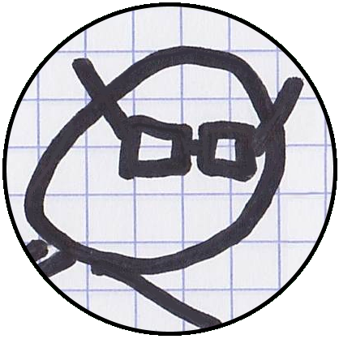To enhance users’ proficiency with Build123D, this section offers a series of challenges. In these challenges, users are presented with a CAD drawing and tasked with designing the part. Their goal is to match the part’s mass to a specified target.
These drawings were skillfully crafted and generously provided to Build123D by Too Tall Toby, a renowned figure in the realm of 3D CAD. Too Tall Toby is the host of the World Championship of 3D CAD Speedmodeling. For additional 3D CAD challenges and content, be sure to visit Toby’s youtube channel.
Feel free to click on the parts below to embark on these engaging challenges.
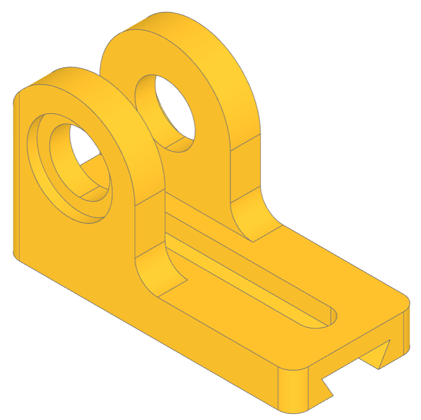
Party Pack 01-01 Bearing Bracket
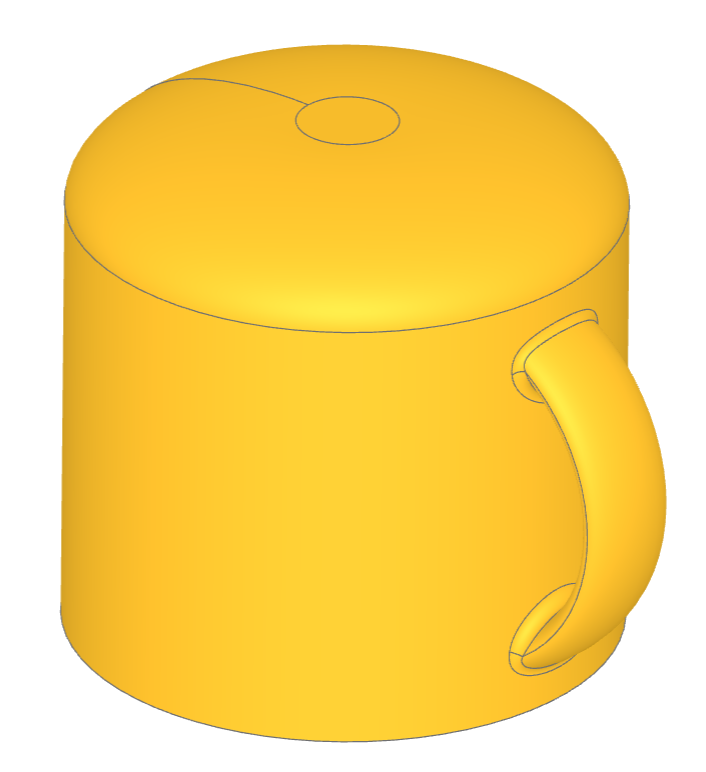
Party Pack 01-02 Post Cap
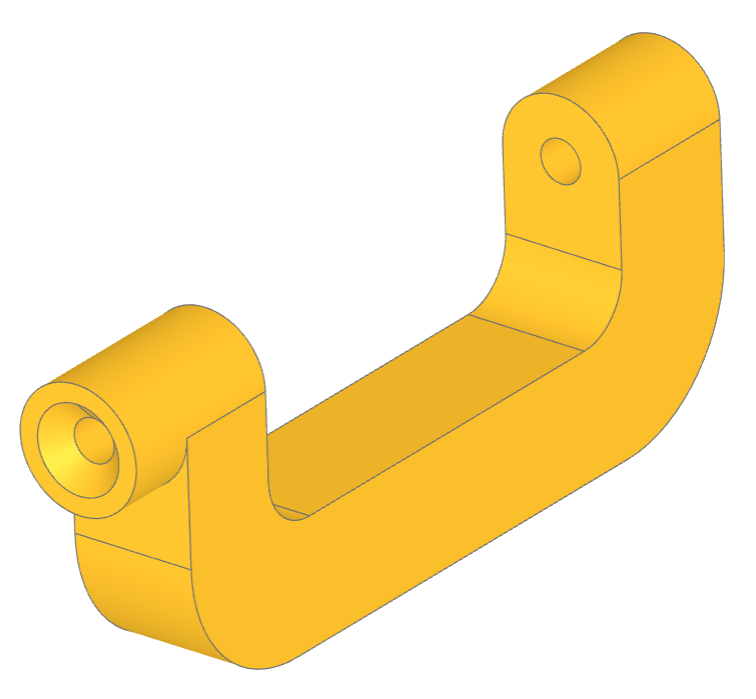
Party Pack 01-03 C Clamp Base
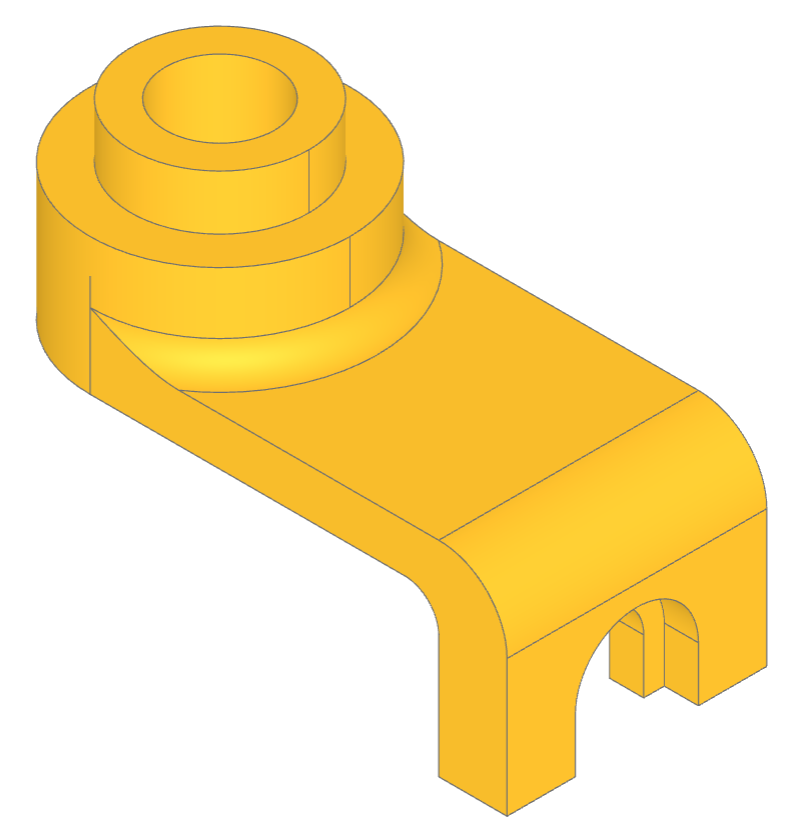
Party Pack 01-04 Angle Bracket
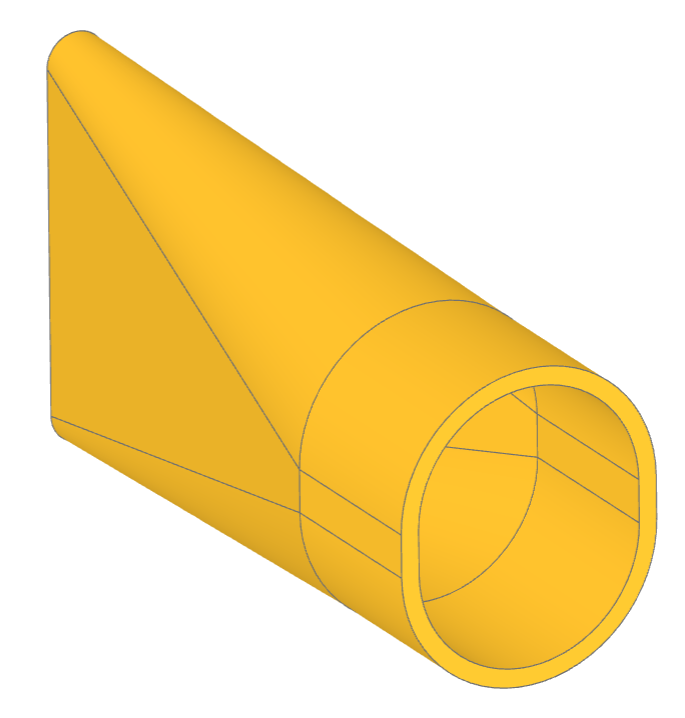
Party Pack 01-05 Paste Sleeve
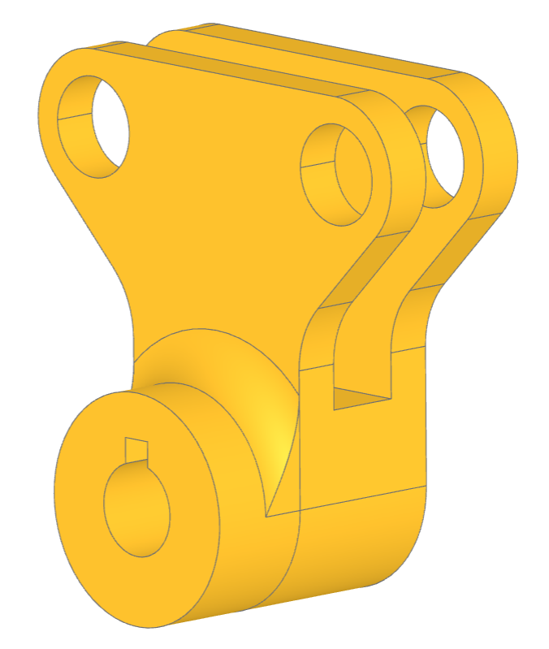
Party Pack 01-06 Bearing Jig
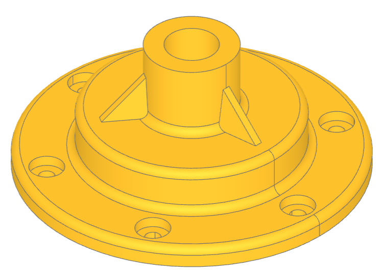
Party Pack 01-07 Flanged Hub
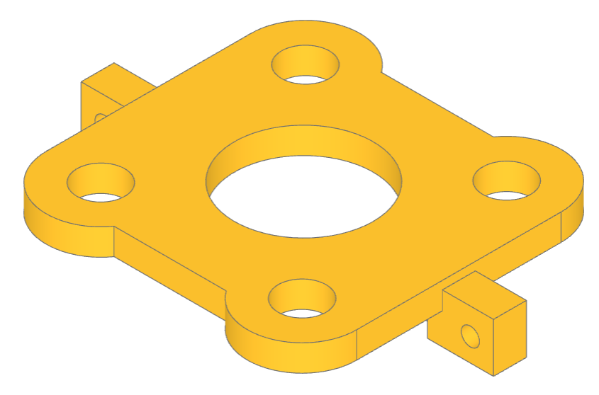
Party Pack 01-08 Tie Plate
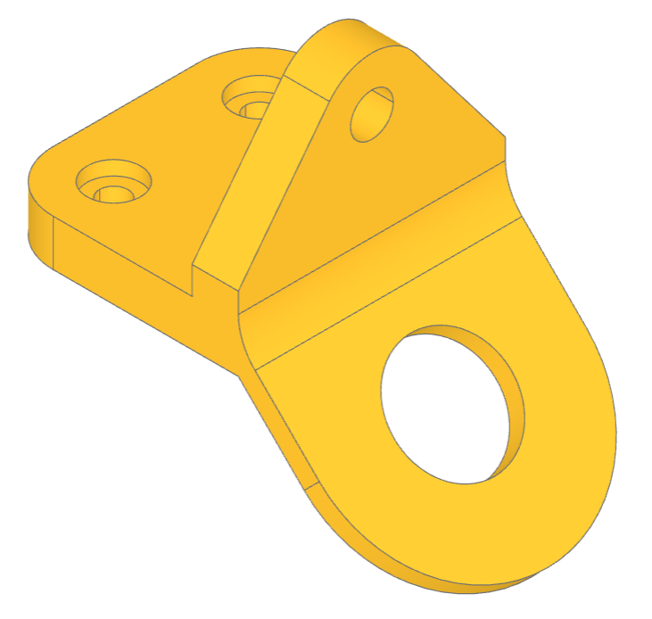
Party Pack 01-09 Corner Tie
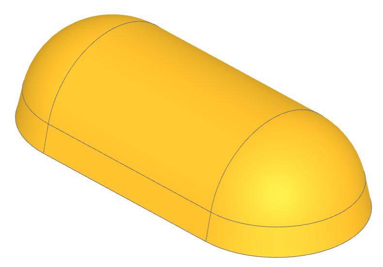
Party Pack 01-10 Light Cap
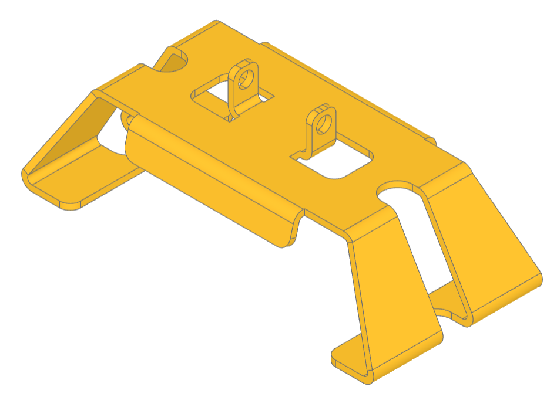
23-02-02 SM Hanger
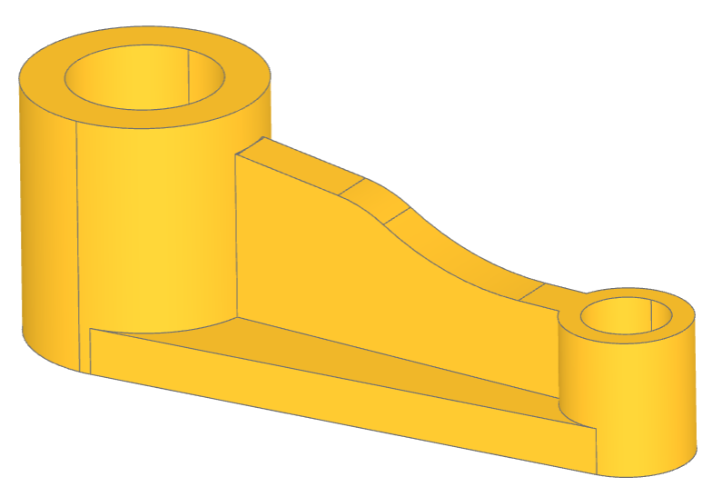
23-T-24 Curved Support
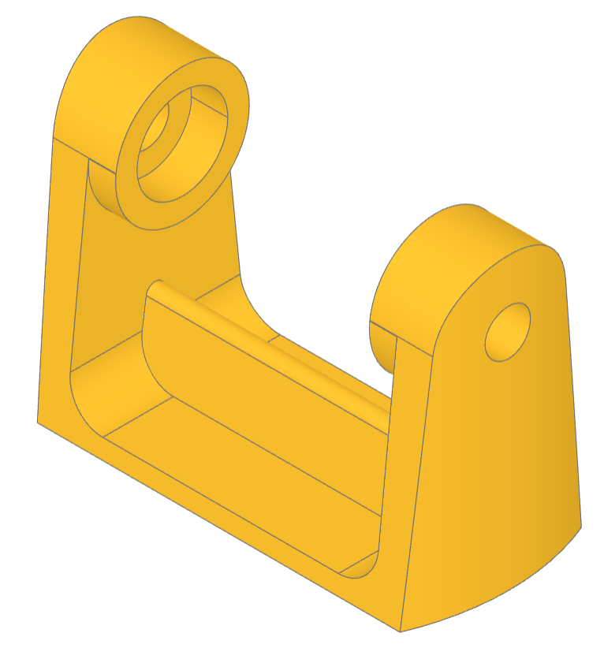
24-SPO-06 Buffer Stand
Party Pack 01-01 Bearing Bracket
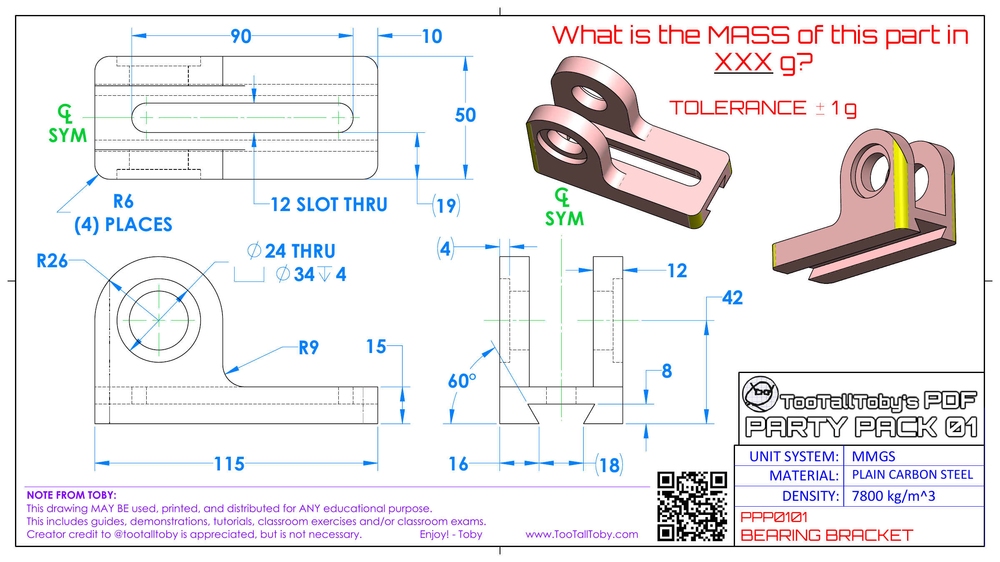Object Mass
797.15 g
Reference Implementation
"""
Too Tall Toby Party Pack 01-01 Bearing Bracket
"""
from build123d import *
from ocp_vscode import *
densa = 7800 / 1e6 # carbon steel density g/mm^3
densb = 2700 / 1e6 # aluminum alloy
densc = 1020 / 1e6 # ABS
with BuildPart() as p:
with BuildSketch() as s:
Rectangle(115, 50)
with Locations((5 / 2, 0)):
SlotOverall(90, 12, mode=Mode.SUBTRACT)
extrude(amount=15)
with BuildSketch(Plane.XZ.offset(50 / 2)) as s3:
with Locations((-115 / 2 + 26, 15)):
SlotOverall(42 + 2 * 26 + 12, 2 * 26, rotation=90)
zz = extrude(amount=-12)
split(bisect_by=Plane.XY)
edgs = p.part.edges().filter_by(Axis.Y).group_by(Axis.X)[-2]
fillet(edgs, 9)
with Locations(zz.faces().sort_by(Axis.Y)[0]):
with Locations((42 / 2 + 6, 0)):
CounterBoreHole(24 / 2, 34 / 2, 4)
mirror(about=Plane.XZ)
with BuildSketch() as s4:
RectangleRounded(115, 50, 6)
extrude(amount=80, mode=Mode.INTERSECT)
# fillet does not work right, mode intersect is safer
with BuildSketch(Plane.YZ) as s4:
with BuildLine() as bl:
l1 = Line((0, 0), (18 / 2, 0))
l2 = PolarLine(l1 @ 1, 8, 60, length_mode=LengthMode.VERTICAL)
l3 = Line(l2 @ 1, (0, 8))
mirror(about=Plane.YZ)
make_face()
extrude(amount=115/2, both=True, mode=Mode.SUBTRACT)
show_object(p)
got_mass = p.part.volume*densa
want_mass = 797.15
tolerance = 1
delta = abs(got_mass - want_mass)
print(f"Mass: {got_mass:0.2f} g")
assert delta < tolerance, f'{got_mass=}, {want_mass=}, {delta=}, {tolerance=}'
Party Pack 01-02 Post Cap
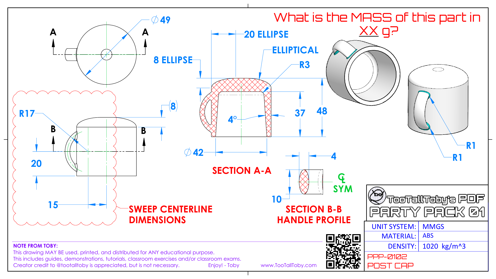Object Mass
43.09 g
Reference Implementation
"""
Too Tall Toby Party Pack 01-02 Post Cap
"""
from build123d import *
from ocp_vscode import *
densa = 7800 / 1e6 # carbon steel density g/mm^3
densb = 2700 / 1e6 # aluminum alloy
densc = 1020 / 1e6 # ABS
# TTT Party Pack 01: PPP0102, mass(abs) = 43.09g
with BuildPart() as p:
with BuildSketch(Plane.XZ) as sk1:
Rectangle(49, 48 - 8, align=(Align.CENTER, Align.MIN))
Rectangle(9, 48, align=(Align.CENTER, Align.MIN))
with Locations((9 / 2, 40)):
Ellipse(20, 8)
split(bisect_by=Plane.YZ)
revolve(axis=Axis.Z)
with BuildSketch(Plane.YZ.offset(-15)) as xc1:
with Locations((0, 40 / 2 - 17)):
Ellipse(10 / 2, 4 / 2)
with BuildLine(Plane.XZ) as l1:
CenterArc((-15, 40 / 2), 17, 90, 180)
sweep(path=l1)
fillet(p.edges().filter_by(GeomType.CIRCLE, reverse=True).group_by(Axis.X)[0], 1)
with BuildLine(mode=Mode.PRIVATE) as lc1:
PolarLine(
(42 / 2, 0), 37, 94, length_mode=LengthMode.VERTICAL
) # construction line
pts = [
(0, 0),
(42 / 2, 0),
((lc1.line @ 1).X, (lc1.line @ 1).Y),
(0, (lc1.line @ 1).Y),
]
with BuildSketch(Plane.XZ) as sk2:
Polygon(*pts, align=None)
fillet(sk2.vertices().group_by(Axis.X)[1], 3)
revolve(axis=Axis.Z, mode=Mode.SUBTRACT)
show(p)
got_mass = p.part.volume*densc
want_mass = 43.09
tolerance = 1
delta = abs(got_mass - want_mass)
print(f"Mass: {got_mass:0.2f} g")
assert delta < tolerance, f'{got_mass=}, {want_mass=}, {delta=}, {tolerance=}'
Party Pack 01-03 C Clamp Base
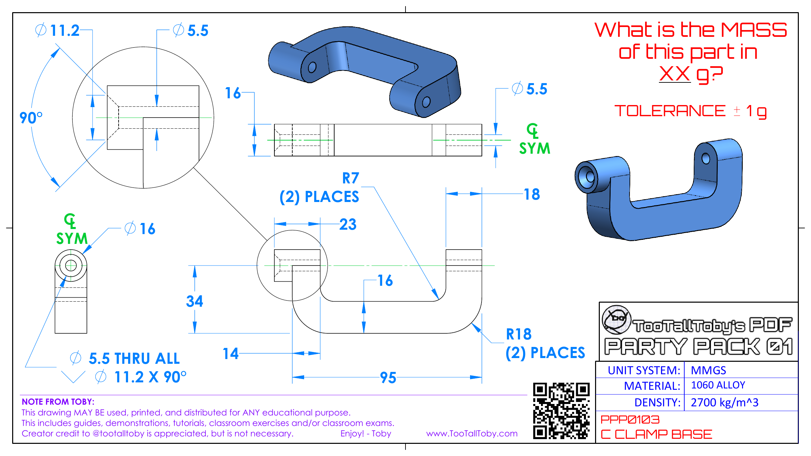Object Mass
96.13 g
Reference Implementation
"""
Too Tall Toby Party Pack 01-03 C Clamp Base
"""
from build123d import *
from ocp_vscode import *
densa = 7800 / 1e6 # carbon steel density g/mm^3
densb = 2700 / 1e6 # aluminum alloy
densc = 1020 / 1e6 # ABS
with BuildPart() as ppp0103:
with BuildSketch() as sk1:
RectangleRounded(34 * 2, 95, 18)
with Locations((0, -2)):
RectangleRounded((34 - 16) * 2, 95 - 18 - 14, 7, mode=Mode.SUBTRACT)
with Locations((-34 / 2, 0)):
Rectangle(34, 95, 0, mode=Mode.SUBTRACT)
extrude(amount=16)
with BuildSketch(Plane.XZ.offset(-95 / 2)) as cyl1:
with Locations((0, 16 / 2)):
Circle(16 / 2)
extrude(amount=18)
with BuildSketch(Plane.XZ.offset(95 / 2 - 14)) as cyl2:
with Locations((0, 16 / 2)):
Circle(16 / 2)
extrude(amount=23)
with Locations(Plane.XZ.offset(95 / 2 + 9)):
with Locations((0, 16 / 2)):
CounterSinkHole(5.5 / 2, 11.2 / 2, None, 90)
show(ppp0103)
got_mass = ppp0103.part.volume*densb
want_mass = 96.13
tolerance = 1
delta = abs(got_mass - want_mass)
print(f"Mass: {got_mass:0.2f} g")
assert delta < tolerance, f'{got_mass=}, {want_mass=}, {delta=}, {tolerance=}'
Party Pack 01-04 Angle Bracket
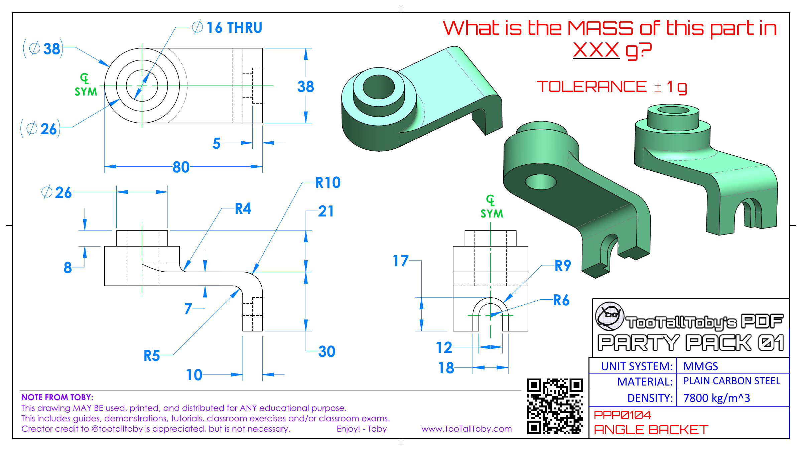Object Mass
310.00 g
Reference Implementation
"""
Too Tall Toby Party Pack 01-04 Angle Bracket
"""
from build123d import *
from ocp_vscode import *
densa = 7800 / 1e6 # carbon steel density g/mm^3
densb = 2700 / 1e6 # aluminum alloy
densc = 1020 / 1e6 # ABS
d1, d2, d3 = 38, 26, 16
h1, h2, h3, h4 = 20, 8, 7, 23
w1, w2, w3 = 80, 10, 5
f1, f2, f3 = 4, 10, 5
sloth1, sloth2 = 18, 12
slotw1, slotw2 = 17, 14
with BuildPart() as p:
with BuildSketch() as s:
Circle(d1 / 2)
extrude(amount=h1)
with BuildSketch(Plane.XY.offset(h1)) as s2:
Circle(d2 / 2)
extrude(amount=h2)
with BuildSketch(Plane.YZ) as s3:
Rectangle(d1 + 15, h3, align=(Align.CENTER, Align.MIN))
extrude(amount=w1 - d1 / 2)
# fillet workaround \/
ped = p.part.edges().group_by(Axis.Z)[2].filter_by(GeomType.CIRCLE)
fillet(ped, f1)
with BuildSketch(Plane.YZ) as s3a:
Rectangle(d1 + 15, 15, align=(Align.CENTER, Align.MIN))
Rectangle(d1, 15, mode=Mode.SUBTRACT, align=(Align.CENTER, Align.MIN))
extrude(amount=w1 - d1 / 2, mode=Mode.SUBTRACT)
# end fillet workaround /\
with BuildSketch() as s4:
Circle(d3 / 2)
extrude(amount=h1 + h2, mode=Mode.SUBTRACT)
with BuildSketch() as s5:
with Locations((w1 - d1 / 2 - w2 / 2, 0)):
Rectangle(w2, d1)
extrude(amount=-h4)
fillet(p.part.edges().group_by(Axis.X)[-1].sort_by(Axis.Z)[-1], f2)
fillet(p.part.edges().group_by(Axis.X)[-4].sort_by(Axis.Z)[-2], f3)
pln = Plane.YZ.offset(w1 - d1 / 2)
with BuildSketch(pln) as s6:
with Locations((0, -h4)):
SlotOverall(slotw1 * 2, sloth1, 90)
extrude(amount=-w3, mode=Mode.SUBTRACT)
with BuildSketch(pln) as s6b:
with Locations((0, -h4)):
SlotOverall(slotw2 * 2, sloth2, 90)
extrude(amount=-w2, mode=Mode.SUBTRACT)
show(p)
got_mass = p.part.volume*densa
want_mass = 310
tolerance = 1
delta = abs(got_mass - want_mass)
print(f"Mass: {got_mass:0.2f} g")
assert delta < tolerance, f'{got_mass=}, {want_mass=}, {delta=}, {tolerance=}'
Party Pack 01-05 Paste Sleeve
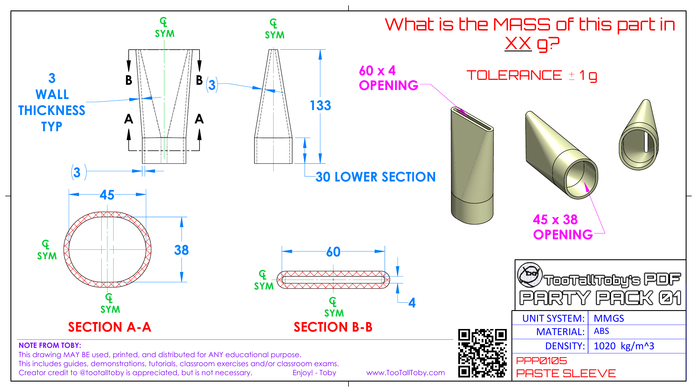Object Mass
57.08 g
Reference Implementation
"""
Too Tall Toby Party Pack 01-05 Paste Sleeve
"""
from build123d import *
from ocp_vscode import *
densa = 7800 / 1e6 # carbon steel density g/mm^3
densb = 2700 / 1e6 # aluminum alloy
densc = 1020 / 1e6 # ABS
with BuildPart() as p:
with BuildSketch() as s:
SlotOverall(45, 38)
offset(amount=3)
with BuildSketch(Plane.XY.offset(133 - 30)) as s2:
SlotOverall(60, 4)
offset(amount=3)
loft()
with BuildSketch() as s3:
SlotOverall(45, 38)
with BuildSketch(Plane.XY.offset(133 - 30)) as s4:
SlotOverall(60, 4)
loft(mode=Mode.SUBTRACT)
extrude(p.part.faces().sort_by(Axis.Z)[0], amount=30)
show(p)
got_mass = p.part.volume*densc
want_mass = 57.08
tolerance = 1
delta = abs(got_mass - want_mass)
print(f"Mass: {got_mass:0.2f} g")
assert delta < tolerance, f'{got_mass=}, {want_mass=}, {delta=}, {tolerance=}'
Party Pack 01-06 Bearing Jig
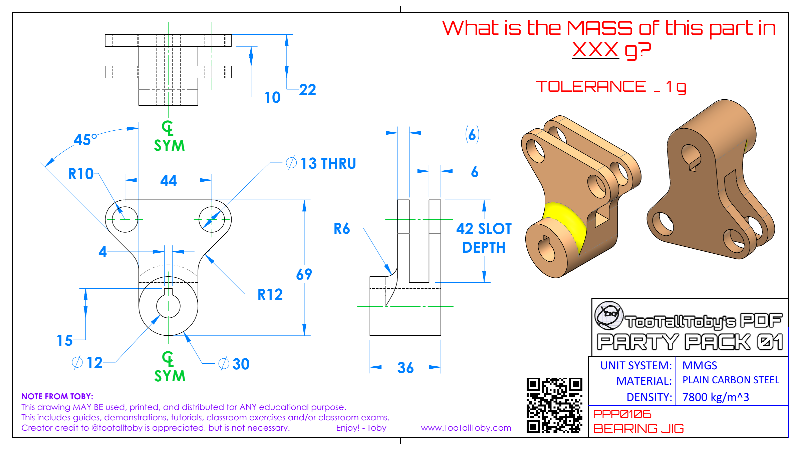Object Mass
328.02 g
Reference Implementation
"""
Too Tall Toby Party Pack 01-06 Bearing Jig
"""
from build123d import *
from ocp_vscode import *
densa = 7800 / 1e6 # carbon steel density g/mm^3
densb = 2700 / 1e6 # aluminum alloy
densc = 1020 / 1e6 # ABS
r1, r2, r3, r4, r5 = 30 / 2, 13 / 2, 12 / 2, 10, 6 # radii used
x1 = 44 # lengths used
y1, y2, y3, y4, y_tot = 36, 36 - 22 / 2, 22 / 2, 42, 69 # widths used
with BuildSketch(Location((0, -r1, y3))) as sk_body:
with BuildLine() as l:
c1 = Line((r1, 0), (r1, y_tot), mode=Mode.PRIVATE) # construction line
m1 = Line((0, y_tot), (x1 / 2, y_tot))
m2 = JernArc(m1 @ 1, m1 % 1, r4, -90 - 45)
m3 = IntersectingLine(m2 @ 1, m2 % 1, c1)
m4 = Line(m3 @ 1, (r1, r1))
m5 = JernArc(m4 @ 1, m4 % 1, r1, -90)
m6 = Line(m5 @ 1, m1 @ 0)
mirror(make_face(l.line), Plane.YZ)
fillet(sk_body.vertices().group_by(Axis.Y)[1], 12)
with Locations((x1 / 2, y_tot - 10), (-x1 / 2, y_tot - 10)):
Circle(r2, mode=Mode.SUBTRACT)
# Keyway
with Locations((0, r1)):
Circle(r3, mode=Mode.SUBTRACT)
Rectangle(4, 3 + 6, align=(Align.CENTER, Align.MIN), mode=Mode.SUBTRACT)
with BuildPart() as p:
Box(200, 200, 22) # Oversized plate
# Cylinder underneath
Cylinder(r1, y2, align=(Align.CENTER, Align.CENTER, Align.MAX))
fillet(p.edges(Select.NEW), r5) # Weld together
extrude(sk_body.sketch, amount=-y1, mode=Mode.INTERSECT) # Cut to shape
# Remove slot
with Locations((0, y_tot - r1 - y4, 0)):
Box(
y_tot,
y_tot,
10,
align=(Align.CENTER, Align.MIN, Align.CENTER),
mode=Mode.SUBTRACT,
)
show(p)
got_mass = p.part.volume*densa
want_mass = 328.02
tolerance = 1
delta = abs(got_mass - want_mass)
print(f"Mass: {got_mass:0.2f} g")
assert delta < tolerance, f'{got_mass=}, {want_mass=}, {delta=}, {tolerance=}'
Party Pack 01-07 Flanged Hub
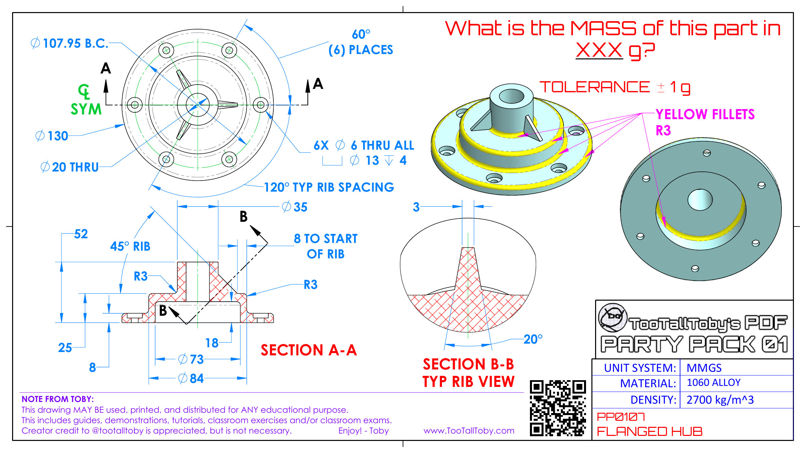Object Mass
372.99 g
Reference Implementation
"""
Too Tall Toby Party Pack 01-07 Flanged Hub
"""
from build123d import *
from ocp_vscode import *
densa = 7800 / 1e6 # carbon steel density g/mm^3
densb = 2700 / 1e6 # aluminum alloy
densc = 1020 / 1e6 # ABS
with BuildPart() as p:
with BuildSketch() as s:
Circle(130 / 2)
extrude(amount=8)
with BuildSketch(Plane.XY.offset(8)) as s2:
Circle(84 / 2)
extrude(amount=25 - 8)
with BuildSketch(Plane.XY.offset(25)) as s3:
Circle(35 / 2)
extrude(amount=52 - 25)
with BuildSketch() as s4:
Circle(73 / 2)
extrude(amount=18, mode=Mode.SUBTRACT)
pln2 = p.part.faces().sort_by(Axis.Z)[5]
with BuildSketch(Plane.XY.offset(52)) as s5:
Circle(20 / 2)
extrude(amount=-52, mode=Mode.SUBTRACT)
fillet(
p.part.edges()
.filter_by(GeomType.CIRCLE)
.sort_by(Axis.Z)[2:-2]
.sort_by(SortBy.RADIUS)[1:],
3,
)
pln = Plane(pln2)
pln.origin = pln.origin + Vector(20 / 2, 0, 0)
pln = pln.rotated((0, 45, 0))
pln = pln.offset(-25 + 3 + 0.10)
with BuildSketch(pln) as s6:
Rectangle((73 - 35) / 2 * 1.414 + 5, 3)
zz = extrude(amount=15, taper=-20 / 2, mode=Mode.PRIVATE)
zz2 = split(zz, bisect_by=Plane.XY.offset(25), mode=Mode.PRIVATE)
zz3 = split(zz2, bisect_by=Plane.YZ.offset(35 / 2 - 1), mode=Mode.PRIVATE)
with PolarLocations(0, 3):
add(zz3)
with Locations(Plane.XY.offset(8)):
with PolarLocations(107.95 / 2, 6):
CounterBoreHole(6 / 2, 13 / 2, 4)
show(p)
got_mass = p.part.volume*densb
want_mass = 372.99
tolerance = 1
delta = abs(got_mass - want_mass)
print(f"Mass: {got_mass:0.2f} g")
assert delta < tolerance, f'{got_mass=}, {want_mass=}, {delta=}, {tolerance=}'
Party Pack 01-08 Tie Plate
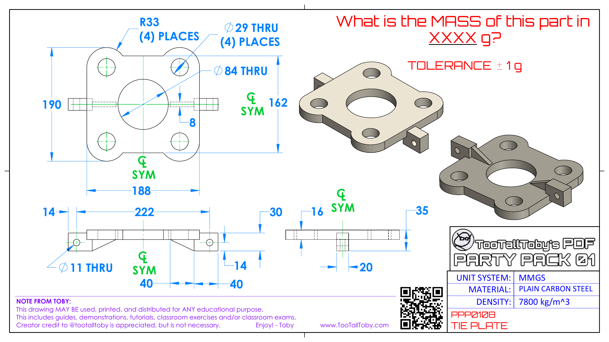Object Mass
3387.06 g
Reference Implementation
"""
Too Tall Toby Party Pack 01-08 Tie Plate
"""
from build123d import *
from ocp_vscode import *
densa = 7800 / 1e6 # carbon steel density g/mm^3
densb = 2700 / 1e6 # aluminum alloy
densc = 1020 / 1e6 # ABS
with BuildPart() as p:
with BuildSketch() as s1:
Rectangle(188 / 2 - 33, 162, align=(Align.MIN, Align.CENTER))
with Locations((188 / 2 - 33, 0)):
SlotOverall(190, 33 * 2, rotation=90)
mirror(about=Plane.YZ)
with GridLocations(188 - 2 * 33, 190 - 2 * 33, 2, 2):
Circle(29 / 2, mode=Mode.SUBTRACT)
Circle(84 / 2, mode=Mode.SUBTRACT)
extrude(amount=16)
with BuildPart() as p2:
with BuildSketch(Plane.XZ) as s2:
with BuildLine() as l1:
l1 = Polyline(
(222 / 2 + 14 - 40 - 40, 0),
(222 / 2 + 14 - 40, -35 + 16),
(222 / 2 + 14, -35 + 16),
(222 / 2 + 14, -35 + 16 + 30),
(222 / 2 + 14 - 40 - 40, -35 + 16 + 30),
close=True,
)
make_face()
with Locations((222 / 2, -35 + 16 + 14)):
Circle(11 / 2, mode=Mode.SUBTRACT)
extrude(amount=20 / 2, both=True)
with BuildSketch() as s3:
with Locations(l1 @ 0):
Rectangle(40 + 40, 8, align=(Align.MIN, Align.CENTER))
with Locations((40, 0)):
Rectangle(40, 20, align=(Align.MIN, Align.CENTER))
extrude(amount=30, both=True, mode=Mode.INTERSECT)
mirror(about=Plane.YZ)
show(p)
got_mass = p.part.volume*densa
want_mass = 3387.06
tolerance = 1
delta = abs(got_mass - want_mass)
print(f"Mass: {got_mass:0.2f} g")
assert delta < tolerance, f'{got_mass=}, {want_mass=}, {delta=}, {tolerance=}'
Party Pack 01-09 Corner Tie
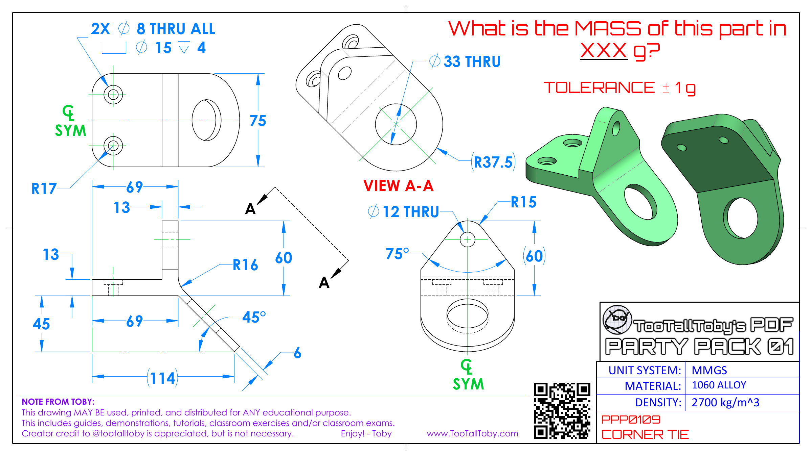Object Mass
307.23 g
Reference Implementation
"""
Too Tall Toby Party Pack 01-09 Corner Tie
"""
from math import sqrt
from build123d import *
from ocp_vscode import *
densa = 7800 / 1e6 # carbon steel density g/mm^3
densb = 2700 / 1e6 # aluminum alloy
densc = 1020 / 1e6 # ABS
with BuildPart() as ppp109:
with BuildSketch() as one:
Rectangle(69, 75, align=(Align.MAX, Align.CENTER))
fillet(one.vertices().group_by(Axis.X)[0], 17)
extrude(amount=13)
centers = [
arc.arc_center
for arc in ppp109.edges().filter_by(GeomType.CIRCLE).group_by(Axis.Z)[-1]
]
with Locations(*centers):
CounterBoreHole(radius=8 / 2, counter_bore_radius=15 / 2, counter_bore_depth=4)
with BuildSketch(Plane.YZ) as two:
with Locations((0, 45)):
Circle(15)
with BuildLine() as bl:
c = Line((75 / 2, 0), (75 / 2, 60), mode=Mode.PRIVATE)
u = two.edge().find_tangent(75 / 2 + 90)[0] # where is the slope 75/2?
l1 = IntersectingLine(
two.edge().position_at(u), -two.edge().tangent_at(u), other=c
)
Line(l1 @ 0, (0, 45))
Polyline((0, 0), c @ 0, l1 @ 1)
mirror(about=Plane.YZ)
make_face()
with Locations((0, 45)):
Circle(12 / 2, mode=Mode.SUBTRACT)
extrude(amount=-13)
with BuildSketch(Plane((0, 0, 0), x_dir=(1, 0, 0), z_dir=(1, 0, 1))) as three:
Rectangle(45 * 2 / sqrt(2) - 37.5, 75, align=(Align.MIN, Align.CENTER))
with Locations(three.edges().sort_by(Axis.X)[-1].center()):
Circle(37.5)
Circle(33 / 2, mode=Mode.SUBTRACT)
split(bisect_by=Plane.YZ)
extrude(amount=6)
f = ppp109.faces().filter_by(Axis((0, 0, 0), (-1, 0, 1)))[0]
# extrude(f, until=Until.NEXT) # throws a warning
extrude(f, amount=10)
fillet(ppp109.edge(Select.NEW), 16)
show(ppp109)
got_mass = ppp109.part.volume*densb
want_mass = 307.23
tolerance = 1
delta = abs(got_mass - want_mass)
print(f"Mass: {got_mass:0.2f} g")
assert delta < tolerance, f'{got_mass=}, {want_mass=}, {delta=}, {tolerance=}'
Party Pack 01-10 Light Cap
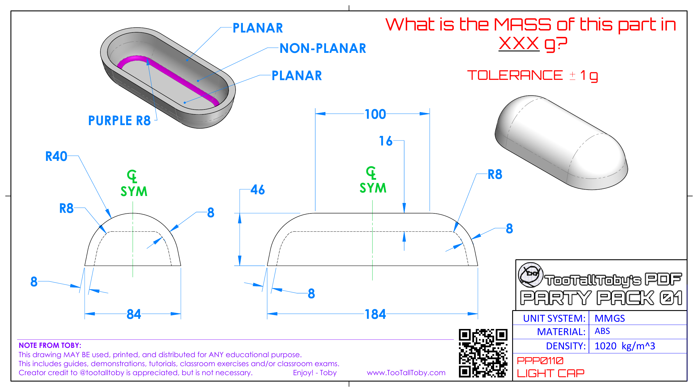Object Mass
211.30 g
Reference Implementation
"""
Too Tall Toby Party Pack 01-10 Light Cap
"""
from math import sqrt, asin, pi
from build123d import *
from ocp_vscode import *
densa = 7800 / 1e6 # carbon steel density g/mm^3
densb = 2700 / 1e6 # aluminum alloy
densc = 1020 / 1e6 # ABS
# The smaller cross-section is defined as having R40, height 46,
# and base width 84, so clearly it's not entirely a half-circle or
# similar; the base's extreme points need to connect via tangents
# to the R40 arc centered 6mm above the baseline.
#
# Compute the angle of the tangent line (working with the
# left/negativeX side, given symmetry) by observing the tangent
# point (T), the circle's center (O), and the baseline's edge (P)
# form a right triangle, so:
OT=40
OP=sqrt((-84/2)**2+(-6)**2)
TP=sqrt(OP**2-40**2)
OPT_degrees = asin(OT/OP) * 180/pi
# Correct for the fact that OP isn't horizontal.
OP_to_X_axis_degrees = asin(6/OP) * 180/pi
left_tangent_degrees = OPT_degrees + OP_to_X_axis_degrees
left_tangent_length = TP
with BuildPart() as outer:
with BuildSketch(Plane.XZ) as sk:
with BuildLine():
l1 = PolarLine(start=(-84/2, 0), length=left_tangent_length, angle=left_tangent_degrees)
l2 = TangentArc(l1@1, (0, 46), tangent=l1%1)
l3 = offset(amount=-8, side=Side.RIGHT, closed=False, mode=Mode.ADD)
l4 = Line(l1@0, l3@1)
l5 = Line(l3@0, l2@1)
l6 = Line(l3@0, (0, 46-16))
l7 = IntersectingLine(start=l6@1, direction=(-1,0), other=l3)
make_face()
revolve(axis=Axis.Z)
sk = sk.sketch & Plane.XZ*Rectangle(1000, 1000, align=[Align.CENTER, Align.MIN])
positive_Z = Box(100, 100, 100, align=[Align.CENTER, Align.MIN, Align.MIN])
p = outer.part & positive_Z
cross_section = sk + mirror(sk, about=Plane.YZ)
p += extrude(cross_section, amount=50)
p += mirror(p, about=Plane.XZ.offset(50))
p += fillet(p.edges().filter_by(GeomType.LINE).filter_by(Axis.Y).group_by(Axis.Z)[-1], radius=8)
ppp0110 = p
got_mass = ppp0110.volume*densc
want_mass = 211.30
tolerance = 1
delta = abs(got_mass - want_mass)
print(f"Mass: {got_mass:0.1f} g")
assert delta < tolerance, f'{got_mass=}, {want_mass=}, {delta=}, {tolerance=}'
show(ppp0110)
23-02-02 SM Hanger
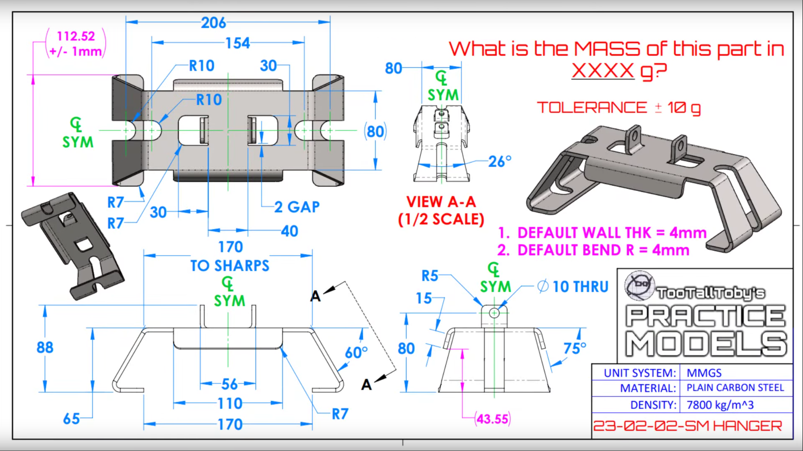Object Mass
1028g +/- 10g
Reference Implementation
"""
Creation of a complex sheet metal part
name: ttt_sm_hanger.py
by: Gumyr
date: July 17, 2023
desc:
This example implements the sheet metal part described in Too Tall Toby's
sm_hanger CAD challenge.
Notably, a BuildLine/Curve object is filleted by providing all the vertices
and allowing the fillet operation filter out the end vertices. The
make_brake_formed operation is used both in Algebra and Builder mode to
create a sheet metal part from just an outline and some dimensions.
license:
Copyright 2023 Gumyr
Licensed under the Apache License, Version 2.0 (the "License");
you may not use this file except in compliance with the License.
You may obtain a copy of the License at
http://www.apache.org/licenses/LICENSE-2.0
Unless required by applicable law or agreed to in writing, software
distributed under the License is distributed on an "AS IS" BASIS,
WITHOUT WARRANTIES OR CONDITIONS OF ANY KIND, either express or implied.
See the License for the specific language governing permissions and
limitations under the License.
"""
from build123d import *
from ocp_vscode import *
sheet_thickness = 4 * MM
# Create the main body from a side profile
with BuildPart() as side:
d = Vector(1, 0, 0).rotate(Axis.Y, 60)
with BuildLine(Plane.XZ) as side_line:
l1 = Line((0, 65), (170 / 2, 65))
l2 = PolarLine(l1 @ 1, length=65, direction=d, length_mode=LengthMode.VERTICAL)
l3 = Line(l2 @ 1, (170 / 2, 0))
fillet(side_line.vertices(), 7)
make_brake_formed(
thickness=sheet_thickness,
station_widths=[40, 40, 40, 112.52 / 2, 112.52 / 2, 112.52 / 2],
side=Side.RIGHT,
)
fe = side.edges().filter_by(Axis.Z).group_by(Axis.Z)[0].sort_by(Axis.Y)[-1]
fillet(fe, radius=7)
# Create the "wings" at the top
with BuildPart() as wing:
with BuildLine(Plane.YZ) as wing_line:
l1 = Line((0, 65), (80 / 2 + 1.526 * sheet_thickness, 65))
PolarLine(l1 @ 1, 20.371288916, direction=Vector(0, 1, 0).rotate(Axis.X, -75))
fillet(wing_line.vertices(), 7)
make_brake_formed(
thickness=sheet_thickness,
station_widths=110 / 2,
side=Side.RIGHT,
)
bottom_edge = wing.edges().group_by(Axis.X)[-1].sort_by(Axis.Z)[0]
fillet(bottom_edge, radius=7)
# Create the tab at the top in Algebra mode
tab_line = Plane.XZ * Polyline(
(20, 65 - sheet_thickness), (56 / 2, 65 - sheet_thickness), (56 / 2, 88)
)
tab_line = fillet(tab_line.vertices(), 7)
tab = make_brake_formed(sheet_thickness, 8, tab_line, Side.RIGHT)
tab = fillet(tab.edges().filter_by(Axis.X).group_by(Axis.Z)[-1].sort_by(Axis.Y)[-1], 5)
tab -= Pos((0, 0, 80)) * Rot(0, 90, 0) * Hole(5, 100)
# Combine the parts together
with BuildPart() as sm_hanger:
add([side.part, wing.part])
mirror(about=Plane.XZ)
with BuildSketch(Plane.XY.offset(65)) as h1:
with Locations((20, 0)):
Rectangle(30, 30, align=(Align.MIN, Align.CENTER))
fillet(h1.vertices().group_by(Axis.X)[-1], 7)
SlotCenterPoint((154, 0), (154 / 2, 0), 20)
extrude(amount=-40, mode=Mode.SUBTRACT)
with BuildSketch() as h2:
SlotCenterPoint((206, 0), (206 / 2, 0), 20)
extrude(amount=40, mode=Mode.SUBTRACT)
add(tab)
mirror(about=Plane.YZ)
mirror(about=Plane.XZ)
got_mass = sm_hanger.part.volume*7800*1e-6
want_mass = 1028
tolerance = 10
delta = abs(got_mass - want_mass)
print(f"Mass: {got_mass:0.1f} g")
assert delta < tolerance, f'{got_mass=}, {want_mass=}, {delta=}, {tolerance=}'
assert abs(got_mass - 1028) < 10, f'{got_mass=}, want=1028, tolerance=10'
show(sm_hanger)
23-T-24 Curved Support
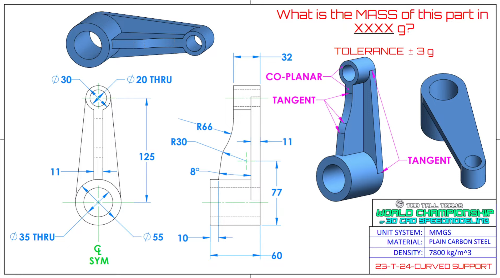Object Mass
1294 g
Reference Implementation
"""
Too Tall Toby challenge 23-T-24 CURVED SUPPORT
"""
from math import sin, cos, tan, radians
from build123d import *
from ocp_vscode import *
import sympy
# This problem uses the sympy symbolic math solver
# Define the symbols for the unknowns
# - the center of the radius 30 arc (x30, y30)
# - the center of the radius 66 arc (x66, y66)
# - end of the 8° line (l8x, l8y)
# - the point with the radius 30 and 66 arc meet i30_66
# - the start of the horizontal line lh
y30, x66, xl8, yl8 = sympy.symbols("y30 x66 xl8 yl8")
x30 = 77 - 55 / 2
y66 = 66 + 32
# There are 4 unknowns so we need 4 equations
equations = [
(x66 - x30) ** 2 + (y66 - y30) ** 2 - (66 + 30) ** 2, # distance between centers
xl8 - (x30 + 30 * sin(radians(8))), # 8 degree slope
yl8 - (y30 + 30 * cos(radians(8))), # 8 degree slope
(yl8 - 50) / (55 / 2 - xl8) - tan(radians(8)), # 8 degree slope
]
# There are two solutions but we want the 2nd one
solution = {k: float(v) for k,v in sympy.solve(equations, dict=True)[1].items()}
# Create the critical points
c30 = Vector(x30, solution[y30])
c66 = Vector(solution[x66], y66)
l8 = Vector(solution[xl8], solution[yl8])
i30_66 = Line(c30, c66) @ (30 / (30 + 66))
lh = Vector(c66.X, 32)
with BuildLine() as profile:
l1 = Line((55 / 2, 50), l8)
l2 = RadiusArc(l1 @ 1, i30_66, 30)
l3 = RadiusArc(l2 @ 1, lh, -66)
l4 = Polyline(l3 @ 1, (125, 32), (125, 0), (0, 0), (0, (l1 @ 0).Y), l1 @ 0)
with BuildPart() as curved_support:
with BuildSketch() as base_plan:
c_8_degrees = Circle(55 / 2)
with Locations((0, 125)):
Circle(30 / 2)
base_hull = make_hull(mode=Mode.PRIVATE)
extrude(amount=32)
extrude(c_8_degrees, amount=60)
extrude(base_hull, amount=11)
with BuildSketch(Plane.YZ) as bridge:
make_face(profile.edges())
extrude(amount=11 / 2, both=True)
Hole(35 / 2)
with Locations((0, 125)):
Hole(20 / 2)
got_mass = curved_support.part.volume * 7800e-6
want_mass = 1294
delta = abs(got_mass - want_mass)
tolerance = 3
print(f"Mass: {got_mass:0.1f} g")
assert delta < tolerance, f'{got_mass=}, {want_mass=}, {delta=}, {tolerance=}'
show(curved_support)
24-SPO-06 Buffer Stand
Object Mass
3.92 lbs
Reference Implementation
from build123d import *
from ocp_vscode import show
with BuildPart() as p:
with BuildSketch() as xy:
with BuildLine():
l1 = ThreePointArc((5 / 2, -1.25), (5.5 / 2, 0), (5 / 2, 1.25))
Polyline(l1 @ 0, (0, -1.25), (0, 1.25), l1 @ 1)
make_face()
extrude(amount=4)
with BuildSketch(Plane.YZ) as yz:
Trapezoid(2.5, 4, 90 - 6, align=(Align.CENTER, Align.MIN))
_, arc_center, arc_radius = full_round(yz.edges().sort_by(SortBy.LENGTH)[0])
extrude(amount=10, mode=Mode.INTERSECT)
# To avoid OCCT problems, don't attempt to extend the top arc, remove instead
with BuildPart(mode=Mode.SUBTRACT) as internals:
y = p.edges().filter_by(Axis.X).sort_by(Axis.Z)[-1].center().Z
with BuildSketch(Plane.YZ.offset(4.25 / 2)) as yz:
Trapezoid(2.5, y, 90 - 6, align=(Align.CENTER, Align.MIN))
with Locations(arc_center):
Circle(arc_radius, mode=Mode.SUBTRACT)
extrude(amount=-(4.25 - 3.5) / 2)
with BuildSketch(Plane.YZ.offset(3.5 / 2)) as yz:
Trapezoid(2.5, 4, 90 - 6, align=(Align.CENTER, Align.MIN))
extrude(amount=-3.5 / 2)
with BuildSketch(Plane.XZ.offset(-2)) as xz:
with Locations((0, 4)):
RectangleRounded(4.25, 7.5, 0.5)
extrude(amount=4, mode=Mode.INTERSECT)
with Locations(p.faces(Select.LAST).filter_by(GeomType.PLANE).sort_by(Axis.Z)[-1]):
CounterBoreHole(0.625 / 2, 1.25 / 2, 0.5)
with BuildSketch(Plane.YZ) as rib:
with Locations((0, 0.25)):
Trapezoid(0.5, 1, 90 - 8, align=(Align.CENTER, Align.MIN))
full_round(rib.edges().sort_by(SortBy.LENGTH)[0])
extrude(amount=4.25 / 2)
mirror(about=Plane.YZ)
part = scale(p.part, IN)
got_mass = part.volume*7800e-6/LB
want_mass = 3.923
tolerance = 0.02
delta = abs(got_mass - want_mass)
print(f"Mass: {got_mass:0.1f} lbs")
assert delta < tolerance, f'{got_mass=}, {want_mass=}, {delta=}, {tolerance=}'
show(p)